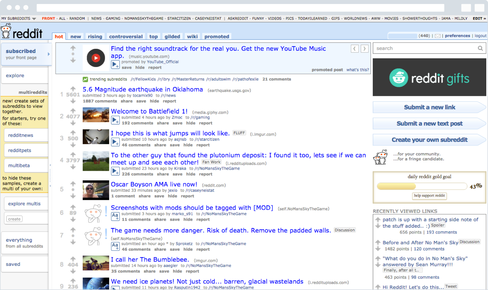
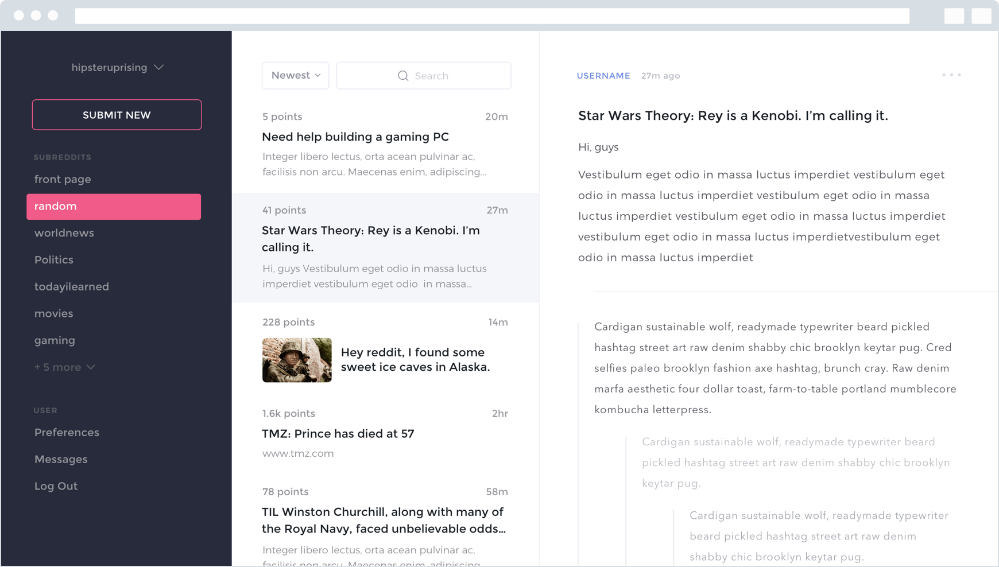

Identifying the Challenges
If you aren't aware, Reddit is an entertainment, social news networking service, and news website where registered community members can submit content, such as text posts or direct links, making it essentially an online bulletin board system. Registered users can then vote submissions up or down to organize the posts and determine their position on the site's pages. The submissions with the most positive votes appear on the main page or the top of a category. Content entries are organized by areas of interest called "subreddits." The subreddit topics include news, gaming, movies, music, books, fitness, food, among many others.
"Reddit was founded in 2005, and its design hasn't changed much since then.”
I love Reddit, and am an active user. Being a part of so many small internet communities is really fun, and helps to keep me up-to-date on my favorite topics. However, being a designer, it's sometimes frustrating to use a website that feels so antiquated. Here's a screengrab of what the current Reddit experience looks like:

Reddit was founded in 2005, and comparatively, its design hasn't changed much since then. As of June 2015, Reddit boasted 36 million registered accounts, with 231 million unique visitors per month. That's a lot of people that could use a better experience. Some would argue that Reddit's antiquated design "keeps out the old people," but I think that reddit communities could only benefit from the added userbase that a simpler UI would provide.
Designing a Solution
Threadr is a web client that I'm working on that transforms the Reddit experience. While the regular Reddit experience forces users to click into each individual post and load a new page, Threadr organizes the page into a more pleasant, three-column experience. Column 1 allows users to choose between subreddits, and column 2 & 3 employ an Apple Mail style layout, with no page reloads.

When it's a little more fleshed-out, Threadr will allow users to log in with their Reddit account and to upvote, downvote, and comment via Reddit's APIs. Version 1, though, will be more of a read-only iteration. Note: I have yet to design the functionality surrounding upvoting, downvoting, and commenting.
While it's not even close to finished, the first version of Threadr is live and functional, currently being hosted on a DigitalOcean droplet. You can check it out here: